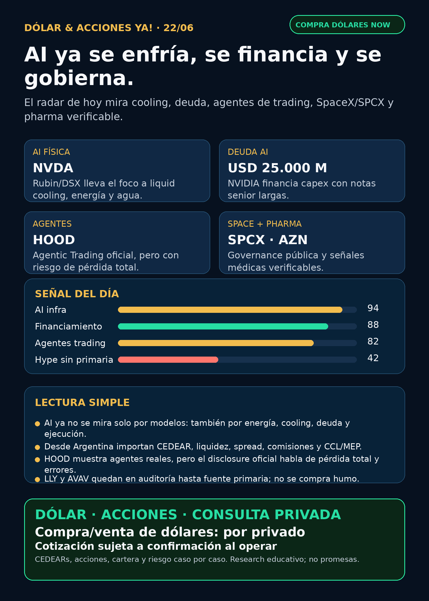

AI se volvió física: cooling, deuda, agentes y governance.
Reporte educativo para Argentina: fuentes verificadas, capa dólar/CEDEARs y cero recomendación personalizada.

Audio: suspendido por instrucción vigente de Charly. Esta edición es texto, imagen y fuentes.
Dólar & Acciones YA — Radar completo — 22/06
Lectura simple del día
La idea de hoy es simple: la carrera de AI se volvió física. No es solo quién tiene el mejor modelo o la GPU más famosa. También importan electricidad, agua, refrigeración, deuda, data centers, auditoría de empresas públicas y el instrumento real que puede usar un inversor.
En criollo: una empresa puede ser espectacular y aun así no ser buena entrada al precio actual; y desde Argentina, además, hay que mirar si existe CEDEAR, liquidez, spread, comisiones, MEP/CCL y riesgo local. Esto es research educativo, no orden de compra.
Dólar Argentina — snapshot operativo
Fuente usada: DolarAPI. Referencia pública para contexto; para operar hay que confirmar broker/mesa en vivo, spread, comisiones y horario.
- Oficial: compra $1432.05 / venta $1481.94; actualización 2026-06-19T16:02:00.000Z.
- Blue: compra $1460 / venta $1480; actualización 2026-06-21T20:56:00.000Z.
- MEP/Bolsa: compra $1475 / venta $1478.2; actualización 2026-06-21T20:56:00.000Z.
- CCL: compra $1507 / venta $1508.9; actualización 2026-06-21T20:56:00.000Z.
- Cripto: compra $1511.6 / venta $1511.7; actualización 2026-06-21T20:56:00.000Z.
Tesis central
AI está pasando de narrativa de software a infraestructura dura:
- Cooling y energía: NVIDIA publicó que Rubin/DSX empuja liquid cooling al 100% en esa generación de infraestructura AI, con coolant hasta 45°C y diseño DSX de loop cerrado/zero water en condiciones favorables.
- Financiamiento: NVIDIA completó una oferta de notas senior por aproximadamente USD 25.000 millones con vencimientos entre 2028 y 2056. Hasta el líder AI financia capex con bonos largos.
- Agentes de trading: Robinhood ya muestra Agentic Trading oficial vía MCP, pero con disclosures muy duros: un agente puede operar sin input directo en cada trade y puede haber pérdida total, errores e información incompleta.
- Space + AI: SpaceX/SPCX suma governance pública con Roelof Botha en Audit Committee y mantiene la señal del deal Cursor/Anysphere por valuación implícita de USD 60.000 millones en acciones SPCX.
- Pharma: AZN/PFE aportan señales verificables; el titular viral de Lilly/pastilla GLP-1 queda bloqueado hasta fuente FDA/Lilly primaria.
Radar educativo por calidad de señal — no es ranking de compra
1) NVIDIA / NVDA — AI infra física: cooling, agua y deuda
- Qué pasó: NVIDIA publicó el 20/06 que sus AI factories Rubin/DSX pueden operar con coolant hasta 45°C; Rubin sería la primera generación de infraestructura AI de NVIDIA con 100% liquid cooling y sin fans. También afirma que una instalación hyperscale de 50 megawatts podría ahorrar más de USD 4 millones anuales en energía/agua asociada a cooling.
- Cruce financiero: SEC 8-K confirma oferta de notas senior por aprox. USD 25.000 millones.
- Lectura en criollo: el moat AI no está solo en el chip; también en quién enfría, alimenta, financia y opera el data center.
- Estado: señal fortalecida / en radar.
- Riesgo: valuación, China, duración de deuda, competencia, capex y expectativas altas.
- Fuentes: https://blogs.nvidia.com/blog/liquid-cooling-ai-factories/ ; https://www.sec.gov/Archives/edgar/data/1045810/000119312526275783/d48176d8k.htm
2) Robinhood / HOOD — AI trading agents reales, con riesgo real
- Qué pasó: Robinhood tiene página oficial de Agentic Trading: agentes IA conectados vía MCP a una cuenta dedicada, con presupuesto reservado y performance visible en app.
- Disclosure clave: Robinhood advierte riesgo de pérdida total, errores, información incompleta y comportamiento inesperado. El agente puede ejecutar operaciones sin input directo del usuario en cada transacción.
- Cruce SEC: 8-K del 16/06 informa recorte laboral aproximado de 10%, volúmenes promedio diarios récord month-to-date en equities, options y prediction markets, y cargos esperados de aprox. USD 20 millones cash + USD 8 millones en stock-based compensation.
- Estado: vigilar fuerte / señal educativa, no promesa de rentabilidad.
- Fuentes: https://robinhood.com/us/en/agentic-trading/ ; https://www.sec.gov/Archives/edgar/data/1783879/000178387926000071/hood-20260616.htm
3) SpaceX / SPCX — governance pública + Cursor/AI coding
- Qué pasó: SEC 8-K del 17/06 informa que SpaceX/SPCX eligió a Roelof Botha como director independiente y miembro del Audit Committee. El 8-K previo sobre Anysphere/Cursor mantiene la señal de space + AI coding.
- Lectura: SpaceX deja de ser solo cohetes/Starlink para convertirse en una plataforma pública donde governance, auditoría, AI coding, satélites y orbital infrastructure conviven.
- Estado: señal fortalecida / vigilar. No asumir acceso local.
- Argentina: hay que verificar broker, especie, liquidez, spread, CEDEAR si existiera, tratamiento fiscal y precio vivo. Empresa extraordinaria no equivale a instrumento conveniente.
- Fuentes: https://www.sec.gov/Archives/edgar/data/1181412/000162828026043865/spaceexplorationtechnologi.htm ; https://www.sec.gov/Archives/edgar/data/1181412/000162828026043411/spaceexplorationtechnologi.htm
4) Pharma verificable — AZN y PFE; Lilly queda en auditoría
- AZN: SEC 6-K reporta aprobación de Truqap en EE.UU. para prostate cancer; CAPItello-281 mostró reducción de 19% en riesgo de radiographic progression/death y rPFS 33,2 vs 25,7 meses. Fuente: https://www.sec.gov/Archives/edgar/data/901832/000165495426005964/a1987i.htm
- PFE: SEC 8-K informa salida del CFO Dave Denton efectiva 15/08/2026 por oportunidad fuera de pharma; otro 8-K reafirma guidance FY2026 de ingresos USD 59.500–62.500 millones y adjusted diluted EPS USD 2,80–3,00. Fuentes: https://www.sec.gov/Archives/edgar/data/78003/000007800326000085/pfe-20260618.htm ; https://www.sec.gov/Archives/edgar/data/78003/000007800326000087/pfe-20260618.htm
- LLY/GLP-1: titulares secundarios sobre una supuesta aprobación FDA de pastilla de Lilly quedaron NO VERIFICADOS sin FDA/Lilly primario. No se publica como hecho.
- Estado: pharma en radar; AZN señal fortalecida, PFE vigilar, LLY auditoría.
5) Defensa / aerospace — AVAV aparece, pero no pasa a titular duro
- Qué pasó: CompositesWorld reportó contrato de USD 20 millones para AeroVironment en investigación de materiales cerámicos/CMC bajo CAMP para U.S. Air Force y Space Force; el artículo cita “Source | AeroVironment”.
- Estado correcto: vigilar / requiere auditoría primaria. Falta DOD contract award o AVAV IR/press directo antes de elevarlo como claim fuerte.
- Por qué importa: guerra física no es solo prime contractors: drones, counter-UAS, materiales avanzados, motores, aftermarket y directed energy pueden tener moat industrial real.
- Recibo de cobertura: revisados AVAV, GE/GE Aerospace, RTX, LMT, NOC, GD, HWM, KTOS, BA, ITA/XAR. AVAV queda en auditoría; GE426 también pendiente; resto sin señal primaria nueva fuerte.
- Fuente secundaria: https://www.compositesworld.com/news/aerovironment-is-awarded-20m-contract-for-ceramic-cmc-materials-research
Watchlist base — seguimiento rápido
- RKLB: revisado; sin fuente primaria nueva fuerte 24–72h. Sigue en radar space/launch/defensa.
- NVDA: señal fuerte por cooling Rubin/DSX + notas senior por USD 25.000 millones.
- PLTR: revisado; sin filing/noticia primaria fuerte nueva. Vigilar valuación y ejecución.
- TSM / ASML / MU: revisados; sin primaria nueva más fuerte que NVDA/SPCX. MU queda pendiente por ciclo HBM/memory.
- GOOGL/GOOG: revisado; TPUs/cloud siguen estructuralmente relevantes, pero sin señal primaria nueva hoy.
- AAPL: revisado; no elevar como AI moat nuevo sin evidencia.
- HOOD: señal clara por Agentic Trading + 8-K de recorte/volúmenes.
- TSLA: autonomía/robotaxi sigue en seguimiento; sin primaria nueva fuerte hoy.
- AVGO: tender offers/deuda; vigilar balance, no venderlo como contrato AI nuevo.
- Gold/GLD/GOLD/B: mantener ambigüedad. GLD, GOLD y B no son lo mismo; pedir instrumento exacto antes de hablar de oro.
- RVI/DXYZ: wrappers private-tech útiles para educación, no acceso limpio ni necesariamente barato a privadas.
- SNDK/CBRS: revisados sin señal primaria nueva fuerte.
Energía y Argentina
- AI power/cooling: la señal fuerte vino de NVIDIA cooling. Implica seguir proveedores de cooling, data centers, power equipment y grid, pero sin inventar ganadores sin fuente.
- Utilities USA: NEE, D, CEG, VST, SMR, OKLO revisados; sin filing operativo nuevo más fuerte que la señal de deuda/capex ya cubierta.
- Argentina energy: YPF, Pampa, TGS, Central Puerto, TGN, Edenor y Transener revisados. Sin señal primaria nueva fuerte en esta corrida; quedan en radar educativo por Vaca Muerta, gas, tarifas, transmisión y generación.
- MOD/cooling: hay filing ARS verificado, pero extracción de PDF quedó pendiente; no usar como claim fuerte hasta extraerlo.
Capa Argentina / instrumentos
- CEDEAR no es acción US: puede tener ratio, liquidez, spread, comisiones y CCL implícito propios.
- MEP/CCL pueden mandar: si el subyacente afuera no se mueve, el precio local en pesos igual puede cambiar por dólar implícito.
- SPCX/DXYZ/RVI: no asumir acceso local ni precio conveniente. Verificar especie, liquidez, premium/descuento vs NAV, comisiones y tratamiento fiscal.
- Regla práctica: buena empresa ≠ buena inversión al precio actual ≠ buen instrumento para Argentina ≠ buen tamaño dentro de cartera.
Autonomous mobility / physical AI
Revisados Tesla, Waymo/Alphabet, Uber, Zoox/Amazon y Joby. No apareció señal primaria nueva más fuerte que NVDA/SPCX/HOOD. Estado: seguimiento.
Crypto gobernado
Sin input crypto nuevo. Carril separado: BTC/ETH/SOL, ETFs/proxies regulados como COIN/MSTR/miners y payment rails con métricas verificables. Tokens virales o memecoins siguen como auditoría de riesgo, no oportunidad.
Private markets / NAV vs precio
- DXYZ: Yahoo chart usado solo como contexto marcó cierre aprox. USD 27,80 al 18/06 vs NAV SEC previo USD 24,56 al 31/03: premium aprox. 13%. Riesgo: NAV viejo, Level 3, liquidez y tracking imperfecto.
- RVI: cierre aprox. USD 40,80 al 18/06 vs NAV SEC previo USD 24,05 al 31/03: premium aprox. 70%. En criollo: podés pagar caro el envase por exposición indirecta a privadas.
- Regla: un wrapper que menciona SpaceX/OpenAI no equivale a comprar SpaceX/OpenAI barato.
Red flags / hype para ignorar hoy
- “FDA aprobó la pastilla de Lilly” sin fuente FDA/Lilly primaria: NO VERIFICADO.
- “AVAV contrato confirmado por DOD” todavía no: hay fuente sectorial secundaria, falta primaria.
- “GOLD/B/GLD es oro” sin ticker exacto: confunde instrumentos.
- “RVI/DXYZ = acceso limpio y barato a privadas”: incompleto; mirar NAV, premium, liquidez y activos nivel 3.
- “AI trading agents = plata automática”: falso; el caso HOOD muestra producto real + riesgo operativo real.
Qué mirar después
1. Fuente primaria DOD/AVAV para contrato CAMP/CMC.
2. Fuente FDA/Lilly antes de publicar cualquier claim de aprobación GLP-1 oral.
3. Earnings/ciclo de MU y datos HBM/memory.
4. Liquidez, volumen, precio vivo y acceso Argentina/US para SPCX.
5. NAV actualizado y premium/descuento de DXYZ/RVI.
6. MEP/CCL vivo, spreads y comisiones antes de mover plata real.
Servicio privado
Dólar · CEDEARs · Acciones · Consulta privada. Compra/venta de dólares e inversiones se ven caso por caso, con cotización sujeta a confirmación al momento de operar.
Disclaimer
Esto es research educativo e informativo para decisión humana. No es asesoramiento financiero personalizado ni orden de compra/venta. Antes de mover plata real hay que revisar precio, instrumento, liquidez, costos, horizonte, cartera, impuestos y tolerancia al riesgo.
Servicio privado
Dólar · CEDEARs · Acciones · Consulta privada. Cotización sujeta a confirmación al operar.